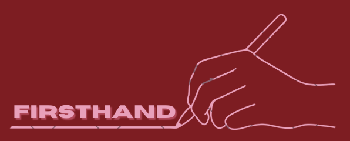

FirstHand
Real Internship Experiences, Told FirstHand.
Marketing, User Experience, User Research
Fall 2025, More to Come!
Figma,Adobe Express, Branding, Research
Branding
Color Palette
A Refreshing Page
I wanted FirstHand to feel like a breath of fresh air for college students. Rather than keep the colors more neutral, the variations of pinks and blue become memorable and make a statement. FirstHand is here for students throughout their internship search journey.
Logo Variations
Trial and Error
The logo process had some trial and error. At first, I thought an artistic approach will match the brand name better, but throughout the experimentation process I started to love the idea of the brand name being written or underlined.
Final Design
I went with this design for the final logo because it created a personal feeling. It gives the impression that the user is writing and underlining the brand name, in the beginning of their research, to show the importantance of learning past interns experiences.
Marketing
Poster Design
My vision for creating these posters was a simple checklist. A student wants an internship that has a collaborative environment, fufilling projects, and positive student experiences, but how do they find internships that check these boxes? The answer is FirstHand, the site that provides you with first hand experiences from past interns at the job you are researching.